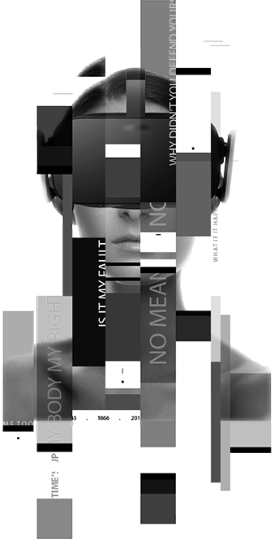
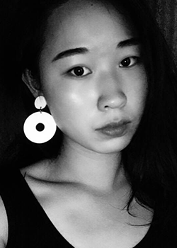
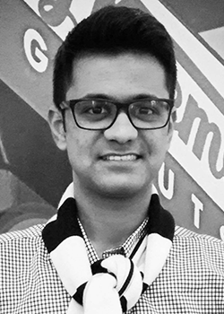

Behind Her Eyes
A VR experience raising awareness of sexual harassment and its prevention
Empathy Development | Positive Intervention | Distinguishing Friendliness from Harassment
Request A Demo
What If It Happened To You?
Place yourself in the body and see through the eyes of a woman as she witnesses and experiences sexual harassment. Ask yourself how you would respond, how you wish others would respond, and what the physical and emotional aftermath of these actions or inactions might be.
Immersive Solution
Combining 360 video with CGI animation and Leap Motion to create a VR experience where players step into the body of a woman as she goes through an evening of her life


A film shot with Samsung Gear 360 providing audience with immersive experience to develop empathy
A CGI avatar with Leap Motion enabling the “spect-actors” to make choices and bring out variations in the plot
Team V

廖敬仪Jingyi Liao
Manager
"My name is not sweetheart."
Ece Karahan
3D Designer
"Know where the line is."
Melisande Brie McLaughlin
Director
"Our bodies, our rights."

Subramanian Ramvijji
Contributor
"Come and feel what she experiences."
Jonathan Kings
Programmer
"How about we start treating other human beings nicely for a change?"
Special Thanks
For the facilities
CRI Labs
Les Grands Voisins
Machine To Be Another
For the mentoring
Daniel Assayag
Fabrice Jouvenot
Jessica Talley Sagot
Philippe Bertrand
For the actors
Andi Hoxha
Apolline Bertin
Daniel Assayag
Ece Karahan
Gaurav Gandhi
Jayadeepak Malli Reddy
(Jingyi Liao)
Marang Garcia Sebego
Melisande Brie McLaughlin
Tamara Al Saadi
Viswanath Aashish Devaki
Reviews
Philippe Bertrand
Investigator of BeAnotherLab
Behind Her Eyes explores the potential use of immersive videos in VR to help society to overcome the culture of gender violence. Beta-tests in Paris have shown an interesting emotional impact in males, what may be significant to expand individual's consciousness and change negative social behaviors. The prototype points out to a promising continuation of this research on how to use different perceptive illusions in VR to enhance men's empathic abilities regarding sexual harassment.
Daniel Assayag
Actor of BehindHerEyes
This experience make you feel the inacceptable presence of one that steps upon your intimate space. Virtual universe, offer the possibility for the viewer to live that moment without the terrible consequences. This VR interactive show is a direct uppercut, that wires your brain to the understanding of what women are put through everyday in our over-sexualised societies.
Jessica Talley Sagot
Center for research and Interdisciplinary | M2 AIV/EdTech
A VR experience that captures a universal yet personal journey on the provocative subject of violence against women. I found myself asking questions I hadn't considered, which balanced discussion of what makes a singular experience so devastatingly uncomfortable for women.
Behind Her Eyes
Request a demo
We provide an immersive VR experience and offer an opportunity for people to raise further discussion about what sexual harassment is. We will come up with more versions in the future.
Please fill the form here to tell us more about your organization (if you're from China, please use this link).
We will get in touch with you in 2 to 3 days to further assess your needs and discuss the implementation process. :)